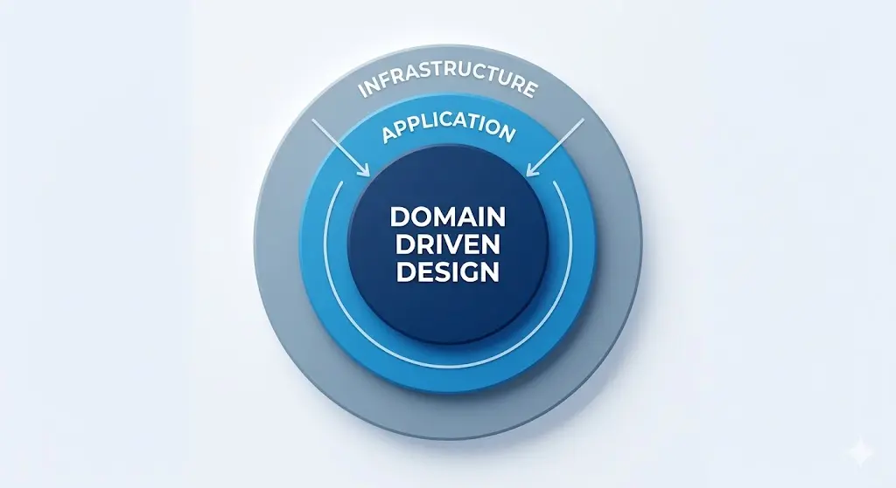

Domain-Driven Design: progettare software che non teme il Business
Scritto da Marco Morello il 16 maggio 2026
💡 In sintesi: il software fallisce quando modella il database invece della realtà. Il Domain-Driven Design ribalta la prospettiva: il codice deve essere lo specchio esatto del business, con lo stesso linguaggio, gli stessi confini e le stesse regole. Il risultato è un sistema che non teme il cambiamento perché è costruito attorno a ciò che non cambia: la logica reale del problema.
Nelle scorse tappe del nostro viaggio abbiamo capito come riparare le "finestre rotte" e come proteggere l'esecuzione del codice con le Guard Clauses. Ma ora dobbiamo rispondere alla domanda più difficile, quella che separa un programmatore che scrive codice da un ingegnere che costruisce sistemi: dove mettiamo la logica quando il problema diventa complicato?
Spesso il software diventa un groviglio inestricabile perché cerchiamo di modellarlo attorno al database o ai framework. È la cosiddetta "Big Ball of Mud". Il Domain-Driven Design (DDD), introdotto da Eric Evans nel 2003, ribalta completamente questa prospettiva: il software deve essere lo specchio esatto della realtà che vuoi gestire — il Dominio. Se il business cambia, il codice deve cambiare seguendo la stessa logica, senza traduzioni forzate.
1. L'architettura a cipolla: proteggere il cuore pulsante
Immagina una cipolla. Al centro c'è il Dominio, la parte più preziosa e delicata. Questa struttura non è un vezzo estetico, ma risponde al principio della Dependency Inversion: le dipendenze puntano sempre e solo verso il centro.
architettura a cipolla — dependency flow
Le frecce arancioni indicano la direzione delle dipendenze: sempre e solo verso il centro. Se cambi il database, il Domain Core non lo sa nemmeno.
Il cuore (Domain Core): qui vivono le regole sacre, quelle che il tuo cliente ti spiega davanti a un caffè. Il cuore è "agnostico": non sa nulla di internet, di database SQL, di file JSON o di server cloud. È puro ragionamento logico. Se la tua azienda fallisse e dovessi gestire tutto con carta e penna, le regole nel cuore resterebbero le stesse.
Lo strato intermedio (Application Services): pensa a questo strato come al "direttore d'orchestra". Non suona nessuno strumento (non contiene logica di business), ma decide quando deve entrare il violino e quando i timpani. Riceve un comando dall'esterno e coordina i pezzi del dominio per portarlo a termine.
La buccia (Infrastruttura): qui ci sono i dettagli "sporchi" e intercambiabili — il database (SQL, NoSQL), l'invio delle notifiche (Email, SMS, Push), le integrazioni esterne (PayPal, Stripe).
2. Bounded Context: dividere per regnare
Un sistema complesso non ha un unico dominio monolitico, ma più Bounded Context (Contesti Delimitati): sottosistemi con il proprio linguaggio, le proprie regole e i propri modelli. Il confine non è solo concettuale — si riflette nel codice in namespace, project e team separati.
Nell'e-commerce, la parola "Prodotto" significa cose radicalmente diverse a seconda di chi la usa. Esplora i contesti qui sotto:
Se cerchi di creare una classe Prodotto che soddisfi tutti e quattro i contesti
contemporaneamente, ottieni un mostro con 40 proprietà di cui il 70% è sempre null.
Il DDD dice: crea quattro classi Prodotto diverse, ognuna nel suo
contesto.
I Bounded Context comunicano tra loro tramite interfacce ben definite, spesso attraverso Domain Events
o un Anti-Corruption Layer.
3. Ubiquitous Language: eliminare il "debito di traduzione"
Uno dei motivi principali per cui il software fallisce è il malinteso tra chi lo progetta e chi lo usa.
Se il tuo cliente dice: "Dobbiamo declassare il cliente a 'Silver' se non ordina da 6 mesi",
nel tuo codice non deve comparire un criptico Status = 2. Deve esserci un metodo
esplicito:
// ❌ Il codice è una black box: nessuno capisce cosa significa "2"
cliente.Status = 2;
// ✅ Il codice si legge come un requisito di business
cliente.DeclassaASilver();Ogni volta che devi "tradurre" quello che dice il business in termini tecnici, stai accumulando debito cognitivo. Come spiega Martin Fowler, il linguaggio deve essere ubiquo: lo stesso nei documenti dei requisiti, nelle chiacchiere tra colleghi e, soprattutto, nel codice.
4. Entities vs Value Objects: identità o sostanza?
In officina, distinguere questi due mattoni fondamentali pulisce istantaneamente metà del codice sporco.
Ridipingi la moto di giallo, cambia motore e ruote: resta la stessa moto, identificata dal telaio.
€10 non "diventa" €20: lo butti e
crei un nuovo oggetto. Non si modifica, si sostituisce.
In C# moderno la differenza si esprime in modo elegante con i record:
// Entity: ha un ID, si compara per identità
public class Moto
{
public Guid Id { get; private set; }
public string Targa { get; private set; }
public Colore Colore { get; private set; } // ← contiene un VO
public void Ridipingi(Colore nuovoColore) => Colore = nuovoColore;
}
// Value Object: immutabile, si compara per valore
// "record" in C# implementa Equals/GetHashCode per valore automaticamente
public record Colore(string Esadecimale)
{
public static Colore Rosso => new("#FF0000");
public static Colore Blu => new("#0000FF");
}🛠️ Malizia senior: sconfiggere la "Primitive Obsession"
Un errore comune è usare tipi primitivi (string, int, decimal)
per tutto. Non usare una string per un'email — usa un Value Object Email:
public record Email
{
public string Valore { get; }
public Email(string valore)
{
// L'oggetto nasce solo se il dato è valido: Always Valid!
if (string.IsNullOrWhiteSpace(valore) || !valore.Contains('@'))
throw new ArgumentException("Indirizzo email non valido.");
Valore = valore.ToLowerInvariant();
}
}
// Se hai in mano un oggetto Email, sai già che è valido.
// Non devi più scrivere: if (email != null && email.Contains("@"))
var email = new Email("mario@officina.it"); // ✅ valida alla nascita
// var email = new Email("Pippo123"); // ❌ esplode subito, non in produzione5. Aggregati: la fortezza della coerenza interna
Un Aggregato è un gruppo di oggetti (Entità e VO) che vivono e muoiono insieme. C'è un solo punto di ingresso ufficiale: l'Aggregate Root (la Radice).
Immagina un Ordine e le sue RigheOrdine. L'Ordine è la radice.
public class Ordine // ← Aggregate Root
{
private readonly List<RigaOrdine> _righe = new();
public IReadOnlyCollection<RigaOrdine> Righe => _righe.AsReadOnly();
public StatoOrdine Stato { get; private set; }
public void AggiungiPezzo(Pezzo pezzo, int quantita)
{
// L'Aggregate Root protegge le invarianti di business
if (Stato == StatoOrdine.Spedito)
throw new InvalidOperationException(
"Impossibile modificare un ordine già spedito.");
_righe.Add(new RigaOrdine(pezzo, quantita));
}
}RigaOrdine direttamente. Questo protegge le Invarianti: regole di
business che non possono mai essere violate. Nota sul design: tieni gli aggregati piccoli. Un aggregato grande è difficile da caricare, testare e gestire in concorrenza. Se ti trovi a mettere molti oggetti insieme, hai trovato un confine di Bounded Context.
6. Domain Services vs Application Services: chi comanda e chi esegue?
Questa è la parte dove la confusione regna sovrana. Usiamo l'analogia dell'officina.
| Application Service | Domain Service | |
|---|---|---|
| Analogia | Il capofficina al bancone | Il meccanico specialista |
| Fa | Coordina, carica, salva, notifica | Calcola, decide, applica regole complesse |
| Conosce | Repository, servizi esterni | Solo oggetti di dominio |
| Tocca DB | ✅ Sì (tramite Repository) | ❌ Mai |
| Domanda | "Cosa fare?" | "Come decidere?" |
// APPLICATION SERVICE — il coordinatore
public class CambioOlioService
{
private readonly IMotoRepository _repository;
private readonly INotificaService _notifica;
public async Task EseguiAsync(Guid motoId)
{
var moto = await _repository.GetByIdAsync(motoId); // 1. Recupera
moto.AggiornaManutenzione(TipoManutenzione.CambioOlio); // 2. Delega al dominio
await _repository.SaveAsync(moto); // 3. Salva
await _notifica.InviaAsync(moto.ProprietarioId, "Moto pronta!"); // 4. Notifica
}
}
// DOMAIN SERVICE — lo specialista
public class CalcolatorePreventivoService
{
// Pura logica: riceve dati, applica le regole, restituisce risultato.
// Non tocca MAI il database.
public Importo Calcola(IEnumerable<Pezzo> pezzi, Fornitore fornitore, RegioneFiscale regione)
{
var costoBase = pezzi.Sum(p => p.Prezzo.Valore);
var tasseApplicabili = regione.CalcolaTasse(costoBase);
var scontoFornitore = fornitore.ApplicaSconto(costoBase);
return new Importo(costoBase + tasseApplicabili - scontoFornitore);
}
}7. Malizie avanzate per un software indistruttibile
Anti-Corruption Layer (ACL)
Se il tuo software moderno deve parlare con un vecchio gestionale degli anni '90, non farlo entrare nel tuo cuore. Crea una classe "traduttrice" che converte quei dati fangosi nei tuoi bellissimi Value Objects. Proteggi il dominio dall'inquinamento esterno.
public class AdattatoreGestionaleVecchio : IClienteRepository
{
private readonly VecchioGestionale _legacy;
public Cliente GetById(int id)
{
var raw = _legacy.CERCA_CLIENTE(id); // API orrenda del sistema legacy
return new Cliente( // Traduzione nel tuo modello pulito
new ClienteId(raw.COD_CLI),
new NomeCompleto(raw.COGNOME, raw.NOME),
new Email(raw.MAIL_PRINCIPALE) // ← VO che valida automaticamente
);
}
}Domain Events: la notifica disaccoppiata
Quando succede qualcosa di importante (es: MotoRiparata), l'aggregato non chiama
direttamente il servizio SMS. Urla un evento all'interno del sistema, e handler separati
decidono come reagire. Questo è il flusso:
pubblica evento
Domain Event
// L'aggregato pubblica l'evento (non sa chi lo ascolterà)
public class Moto
{
private readonly List<IDomainEvent> _eventi = new();
public IReadOnlyCollection<IDomainEvent> Eventi => _eventi.AsReadOnly();
public void CompletaRiparazione()
{
Stato = StatoMoto.Pronta;
_eventi.Add(new MotoRiparataEvent(Id, DateTime.UtcNow));
}
}
// Un handler separato, totalmente disaccoppiato, decide cosa fare
public class MotoRiparataHandler : IEventHandler<MotoRiparataEvent>
{
public async Task HandleAsync(MotoRiparataEvent evento)
{
await _smsService.InviaAsync(/* ... */);
await _dashboardService.AggiornaPannelloAsync(/* ... */);
}
}Questo rende il sistema flessibile come un modulo LEGO: aggiungi nuovi comportamenti senza toccare il codice esistente — è l'Open/Closed Principle in azione.
Referenzia solo per ID
Un Aggregato non dovrebbe contenere un altro Aggregato intero. Se l'Ordine ha bisogno del
Cliente, tieni solo il ClienteId. Caricare l'intero grafo significa portare
metà database in memoria e rallentare tutto il sistema.
8. Quando scendere in pista con il DDD?
Il DDD è un investimento con un costo reale in termini di tempo e complessità iniziale.
- La logica è un labirinto di "se", "ma" e eccezioni continue
- Il progetto è destinato a crescere e durare anni
- Hai accesso diretto agli esperti del dominio
- Il team è abbastanza grande da beneficiare dei confini espliciti
- Stai costruendo un CRUD semplice (salva, mostra, elimina)
- Il progetto ha vita breve o requisiti stabili e banali
- Non hai accesso agli esperti del dominio
- Stai usando un reattore nucleare per accendere un fiammifero
Il rispetto per il mestiere
Alla fine del giro, il DDD non è un dogma religioso. È rispetto. Rispetto per il business che ti paga lo stipendio e rispetto per te stesso, che quel codice dovrai riaprirlo tra sei mesi.
Applicare questi concetti è come preparare la moto per un viaggio transcontinentale: richiede tempo, fatica e qualche imprecazione in officina prima di partire. Potresti semplicemente montare in sella e andare, ma sai che al primo passo di montagna sotto la pioggia, se non hai controllato i serraggi e la logica della tua strumentazione, rimarrai a piedi.
Progettare software "Domain-Driven" significa smettere di essere dei passacarte tra un database e una pagina web e iniziare a essere dei veri architetti. Non aver paura di sbagliare i confini dei tuoi contesti all'inizio; la meccanica del software si impara sporcandosi le mani e ascoltando il rumore dei bug.
Ogni volta che scrivi una classe che modella fedelmente la realtà, stai costruendo un sistema che non teme il cambiamento, ma lo cavalca. Ed è lì che il viaggio del programmatore diventa davvero divertente.